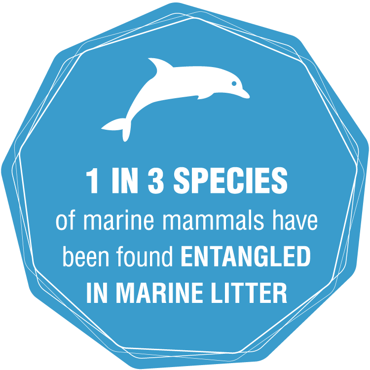

Everyone uses plastic at least once a day. Whether it’s the plastic bag you use to carry your groceries, or the plastic cup for your ice coffee, plastic is simply unavoidable. “We are producing 300 million tons of plastic every year, 50% of which is for
single-use purposes” (“Facts . About Plastic . Help - Plastic Oceans Foundation.”). We go through our day living by the motto, out of sight and out of mind but what happens to the plastic we use? Where does it end up? Sadly the answer
is our ocean. Most people may assume that the plastic that ends up in our ocean is simply dumped there, however that is not completely true. According to WWF.org, a major contributor to the waste that ends up in our ocean comes from littering
and “illegal dumping of waste.” People who don't properly dispose of their trash or recycle, are responsible for the plastic that winds up in the ocean. Additionally, recycled plastic that is thrown into bins end up in landfills, and when
trash is being transported it blows away due to its lightweight. “From there it can eventually clutter around drains and enter rivers and sea this way” (“How Does Plastic End up in the Ocean?” People need to be more aware of what happens
to the plastic they use. When you are done using something that is plastic it doesn’t simply disappear, it winds up in sewers and drain pipes which takes them to our ocean. We need to become responsible for our plastic waste because it
is a worldwide dilemma and therefore, precautions should be taken to prevent its effects.

Plastic is more than a physical problem. About “ 8 million tons of plastic” end up in our ocean every year (Facts . About Plastic . Help - Plastic Oceans Foundation.). This is important for all of us to be aware of because issues such as these are often
ignored until they pose an immediate danger. Just because plastic in our ocean isn't impacting us directly doesn't mean it's any less of a problem. Marine animals are the biggest victims of plastic waste. A grey whale that died on a beach
near seattle in 2010 was found with “more than 20 plastic bags, a golf ball and other rubbish in its stomach” (“Plastic Pollution Affects Sea Life Throughout the Ocean.”). Marine animals are not meant to be eating plastic but the increasing
amount of plastic that end up in their habitats causes them to come into contact with it more frequently. This is dangerous because “plastic does not usually break down in an animal's body after being eaten” and the “substances released
from decomposing plastic are absorbed and can have adverse effects” (Plastics in Oceans Decompose, Release Hazardous Chemicals, Surprising New Study Says.). Scientists have found that plastic can leak chemicals such as BPA and PS oligomer
which can “disrupt the functioning in animals and can seriously affect reproductive systems” (Plastics in Oceans Decompose, Release Hazardous Chemicals, Surprising New Study Says.). These are chemicals that are not found naturally and
are responsible for disrupting the hormonal systems of animals. To add on, styrofoam has been found to release “toxic substances called styrene monomer” which is known to cause cancer. We previously only looked at plastic as being no more
than a choking hazard to marine life however, it is now much more complex than that. The chemicals in plastic are affecting their reproductive system and can leave them with long-lasting effects. This poses a threat to us as well because
we eat marine animals and anything that is harmful to them becomes harmful to us once digested.
Overall, plastic has various effects on our planet. It impacts all of us and the consequences should be taken seriously. The chemicals that plastic contains such as BPA and PS oligomer present a consequential problem. It is our job to prevent these chemicals
from getting near these animals because it is our fault that they are even exposed to it, since they aren’t found naturally in nature. If everyone did their part to decrease the use of single use plastic products, the amount that ends
up in our ocean and marine life would drastically change. People should educate themselves on the effects of plastic waste in order to motivate them to make a change in their lives. This is an issue that should be dealt with now before
it gets any worse.